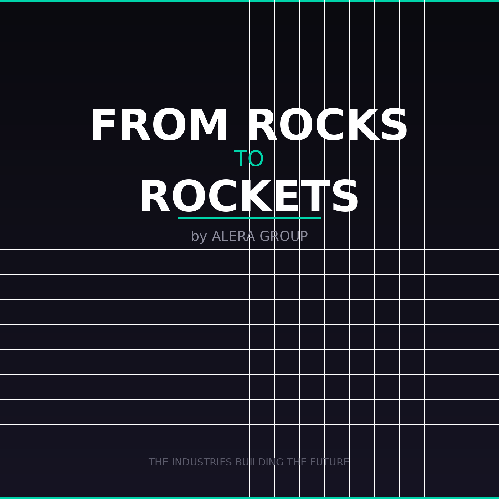

From Rocks to Rockets
An AI-powered podcast exploring the industries building the future — from power, critical minerals, and data centers to AI infrastructure, bitcoin mining, nuclear, robotics, and aerospace. We cover the hidden physical systems behind the next industrial era and explain how raw materials become the technologies shaping tomorrow. New episodes daily.
Hosted by
Jason Sher & Shane Smith
Produced with AI-assisted tools including AI-generated voice delivery and visuals.
All content, research, and editorial direction by Jason Sher and Shane Smith.